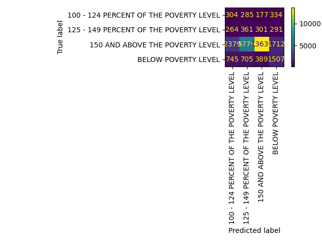

Decision Trees are a method of partitioning data in supervised learning. Through this a top down tree is designed in such a way that each parent node splits the data into 2 or more groups besed on the data itself. For example the data could split based on categories or certain values (for continuous or discrete data) which feeds into another level of the tree. Each location where a split occures is called a node and the split above it is called a parent node. The original split/node is referred to as the root node. Each set of sibling nodes exist within a given level of the tree. Lastly, the height of the tree is referred to as the depth. Decision trees are particularly good at visualizing data for easy and quick interpretation of how the data feeds into the target variables and their respective classifications. The ultimate goal in the decision trees is to see how partitioning the data leads to the target variables being classified as they are. One common example of decision trees is medical practitioners. They often use decision trees to classify illness by asking more specific, leading questions. One could start with height, followed by weight, followed by symptoms, and lastly recent exposures to ultimately guide the doctor to the proper diagnosis. Another example of a decision tree is displayed below for ease of understanding (referenced from TowardsDataScience.com).
Decision tree efficiency and efficacy is often viewed through three specific measurements: the Gini index, information gain, and entropy. Entropy is the measure of randomness, uncertainty, or imputiry within the dataset itself. E.g. a measure of entropy of 0 means the data is perfectly pure (or homogenous) while a measurement of 1 means that the dataset is perfectly impure. As one can infer from the above clarification, entropy is bounded between zero and one, and it is calculatied by taking the sum of the probability times the log (base 2) of the probability of a datapoint existing within a given category for all categories. Information gain is an extension of entropy and enables data analysts and data scientists to understand how a node in a decision tree performs by the amount of entropy that is lost. This is done by measuring the entropy both before and after a node is implemented. The last measurement used in the efficacy of decision trees in the gini index, and is the most complex of the three. The gini index is another way to measure randomness of the dataset but is used specifically from a probabilistic standpoint. Said index is also a measurement between 0 and 1 and is the measurment of the likelihood of a feature being classified wrong at a specific point. When the index is 0, then the node is determined to be pure and the probability of misclassification is 0. All three of these are displayed below.

Referenced from here

Referenced from here
Using all three of these in tandem with one another is paramount to maximizing the efficiency of the decision tree. More precisely, by maximizing both the information gain and reducing the gini index over time enables one to select the correct partition to use in a given node. Because of this, there is a particular solution that is the most efficient in classification based on outcomes (and many that can be similarly helpful). As such the goal of a decision tree is to reduce the entropy in the data set by maximizing the information gain in each level of the tree while minimizing either the entropy OR the gini index. Without using both information gain and one other metric it becomes near impossible to maximize the efficacy of the nodes, ultimately making the tree less "greedy." However, because it is possible to set the splits in the data at any point or value it is possible to create any number of trees that is equal to the number of data points by extending the depth or complexity of the tree. It is also technically possible to create an infinite number of trees (by using ineffective data) in the case that the data is not disjoint and is circular leading to trees that feed into themselves and continue to split indefinitely. This is explained futher below.
In order to create a decision tree, specific types of data must be input into the system. The data inputs themselves can be both numerical and categorical, however the dataset as a whole must be disjoint. Disjoint data means that each of the features present must be mutually exclusive from one another, and have no common elements between them. If the data is not disjoint, the tree will become circular and can, in effect, lead to infinit loops where no possible classification may result. In these instances where the data has common features are not mutually exclusive, it is best to remove or modify the samples in the data such that the tree can continue to run harmoniously. In the below code and example, all cases of non disjoint features have been removed entirely. Furthermore, a visual example of disjoint data is displayed below in its simplest, statistical definition (referenced from MathOnlyMath).
The raw data for the following decision trees was as follows
| age | job_industry_recode | school_enroll_lastweek | employment | fam_size | ... | fam_otc_med_costs | fam_rent_val | fips | state | state.1 | |
|---|---|---|---|---|---|---|---|---|---|---|---|
| 1 | 67 | Not in universe, or children | Not in univ. or children & Armed Forces | 0 | 0 | ... | 0 | 0 | ME | 4 | 23 |
| 2 | 74 | Not in universe, or children | Not in univ. or children & Armed Forces | 0 | 0 | ... | 60 | 0 | ME | 4 | 23 |
| 3 | 66 | Not in universe, or children | Not in univ. or children & Armed Forces | 0 | 1 | ... | 0 | 0 | ME | 3 | 23 |
| 4 | 68 | Not in universe, or children | Not in univ. or children & Armed Forces | 0 | 1 | ... | 0 | 0 | ME | 3 | 23 |
| 5 | 52 | Not in universe, or children | No | 0 | 1 | ... | 0 | 0 | ME | 3 | 23 |
5 rows × 38 columns
Decision trees are a powerful tool in partitioning data and are capable of reading both categorical and numeric data. However, in python, it must be noted that there must be extra special care taken when combining data types as python can and will inadvertently add extra weight to certain features based on how categorical data must be encoded. Thus, when selecting categorical columns, only those where the column could be drastically reduced or one hot encoded without drastically increasing dimensionality were used. Many of these columns were originally selected based on the multinomialnaive bayes and categorical naive bayes datasets. Refer to the Naive Bayes tab for further clarification. The following columns were selected for use in the decision trees: federal income, family size, age, family medical costs, weeks unemployed, hours worked, job industry, highest education, marital status, full time or part time, job industry, sex, full time or part time school. Of these categories job industry, highest education, marital status, full time or part time, sex, and full time or part time school were all categorical variables that needed to be encoded. One hot encoding was selected, and while it increased dimensionality, many of the features were dummy features or had few categories such that it did not impact the data heavily. However, age, job industry, and education did have a drastic amount of categories and as such were remapped into larger groupings. For example, management operations and administrative jobs were all remapped to be within a white collar job category. There was again an issue of balance as noted in the naive bayes section. To solve this, the training data was randomly undersampled to make a more balanced training dataset. This prevents artificially inflating accuracy scores and enables the trees to be more capable at identifying the minority classes. Lastly, in between each of the trees a feature was dropped to better understand the relationships in the data and provide unique root nodes. In the first decision tree, all features were used, in the second tree all but income were included in the data, adn in the third tree all but training, marital status, and age were used to create the tree. The overall final training and testing data is included below.
| federal_gross_income_adj | fam_size | age | fam_med_costs | weeks_unemployed | ... | labor_force_recode_Unemp,on layoff | labor_force_recode_W/job,not at work | labor_force_recode_Working | sex_Female | sex_Male | |
|---|---|---|---|---|---|---|---|---|---|---|---|
| 103888 | 0 | 1 | 5 | 0 | 0 | ... | 0 | 0 | 0 | 1 | 0 |
| 89741 | 0 | 1 | 14 | 0 | 0 | ... | 0 | 0 | 0 | 1 | 0 |
| 71415 | 0 | 3 | 2 | 500 | 0 | ... | 0 | 0 | 0 | 1 | 0 |
| 114301 | 0 | 0 | 69 | 60 | 0 | ... | 0 | 0 | 0 | 0 | 1 |
| 93094 | 0 | 1 | 4 | 0 | 0 | ... | 0 | 0 | 0 | 0 | 1 |
| ... | ... | ... | ... | ... | ... | ... | ... | ... | ... | ... | ... |
| 91830 | 0 | 0 | 29 | 0 | 0 | ... | 0 | 0 | 0 | 1 | 0 |
| 132499 | 2801 | 1 | 52 | 400 | 0 | ... | 0 | 0 | 0 | 1 | 0 |
| 18297 | 0 | 0 | 59 | 350 | 0 | ... | 0 | 0 | 0 | 0 | 1 |
| 142277 | 0 | 1 | 0 | 0 | 0 | ... | 0 | 0 | 0 | 1 | 0 |
| 65234 | 0 | 1 | 15 | 40 | 0 | ... | 0 | 0 | 0 | 1 | 0 |
17840 rows × 49 columns
and the target variable counts were:
poverty ratio| federal_gross_income_adj | fam_size | age | fam_med_costs | weeks_unemployed | ... | labor_force_recode_Unemp,on layoff | labor_force_recode_W/job,not at work | labor_force_recode_Working | sex_Female | sex_Male | |
|---|---|---|---|---|---|---|---|---|---|---|---|
| 60456 | 0 | 1 | 11 | 150 | 0 | ... | 0 | 0 | 0 | 0 | 1 |
| 61253 | 312940 | 1 | 38 | 3500 | 0 | ... | 0 | 0 | 1 | 1 | 0 |
| 40491 | 115103 | 1 | 34 | 805 | 0 | ... | 0 | 0 | 1 | 0 | 1 |
| 113407 | 44020 | 0 | 32 | 0 | 0 | ... | 0 | 0 | 1 | 0 | 1 |
| 79087 | 0 | 1 | 1 | 1000 | 0 | ... | 0 | 0 | 0 | 1 | 0 |
| ... | ... | ... | ... | ... | ... | ... | ... | ... | ... | ... | ... |
| 15647 | 50002 | 2 | 23 | 300 | 0 | ... | 0 | 0 | 1 | 1 | 0 |
| 59576 | 0 | 1 | 45 | 1270 | 0 | ... | 0 | 0 | 1 | 1 | 0 |
| 14999 | 0 | 1 | 0 | 330 | 0 | ... | 0 | 0 | 0 | 1 | 0 |
| 98278 | 22000 | 1 | 35 | 0 | 0 | ... | 0 | 0 | 1 | 1 | 0 |
| 23969 | 0 | 1 | 52 | 4300 | 0 | ... | 0 | 0 | 1 | 1 | 0 |
29172 rows × 49 columns
and the target variable counts were as follows:
poverty ratioTree
Confusion Matrix 1
The accuracy score for the original net decision tree was 69.2%
Tree
Confusion Matrix 2
The accuracy score for the second decision tree was 54.2%
Tree
Confusion Matrix 3
The accuracy score for the third tree was: 53.6%
In this project, decision trees are used primarily as a supervised learning technique to calssify the levels of impoverishment and to identify what key features are needed to do so. Looking to each of the results of the individual decision trees, the preliminary decision tree performs best scoring nearly 70% successful at correctly identifying the level of impoverishment. The drastic drop off in accuracy shows how substantial income is to the level of poverty somebody experiences despite costs a family may have to endure. One other substantial thing to notice is the level of entropy in each of the trees. There is high entropy exhibitted in all of the trees. This manifests primarily as noise, but further suggests a need for more data around the participants of the census. Furthermore, the initial decision tree exhibits all expense based features in the tree despite others showing categorical features as significant. This demonstrates that despite potential indicators of income, it truly is the expenses and costs that help to determine impoverishment even if the individuals that typically experience poverty are unbalanced in general. Additionally, the first tree is the only one to have a single node with less than a 0.05 gini coefficient, the closest to pure exhibitted. This means that there is a group of features or questions that one may ask in the decision tree to indicate at what level of poverty one experiences. Said node is based in income primarily, then medical costs, then family size.
The following two nodes exhibit higher levels of entropy, lower information gain between the levels and generally higher gini coefficients. This again highlights the importance of income, but after dropping the feature provides substantial insight into what other features may be indicative of income in the US. The second tree again exhibits a cost, but further looks into what type of employment a person exhibits, either full or part time. This begs the question and leads to the assumption that part time employment may potentially lead to higher rates of poverty in the US. Furthermore, the third decision tree looks to family size and whether or not a person was married and separated. These again suggest that there is a possibility that having larger families and being divorced in the US can lead to higher rates of poverty.
Outside of the accuracy scores, the confusion matrices also provide some unique insight. The first tree was able to identify and classify poverty at a very successful rate. However, looking to the confusion matrix, it was only able to do so for those who are not impoverished and those who are. It noticable fails at classiying those at risk of poverty as seen by the true classification rates for the two classes being nearly a third of the other two trees. Both of the succeeding trees performed far better at identifying those at risk of poverty, those who are between 100 and 150% of the poverty threshold. In such a case that identifying those individuals is important, it may be more beneficial to not use the first tree despite the higher accuracy score.